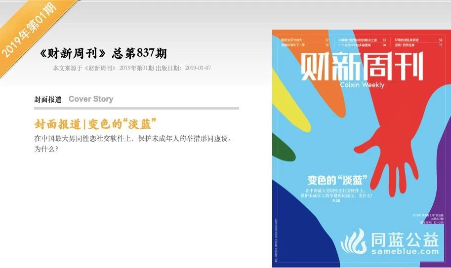
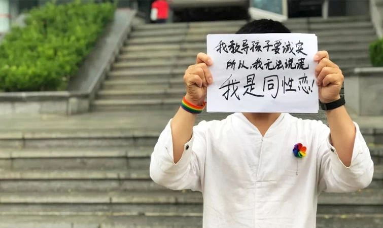
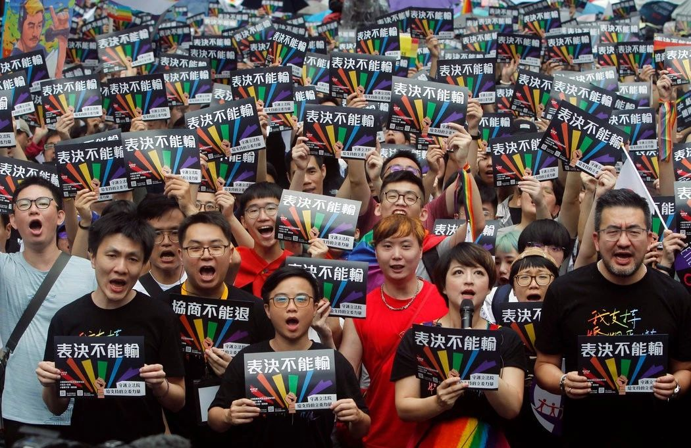
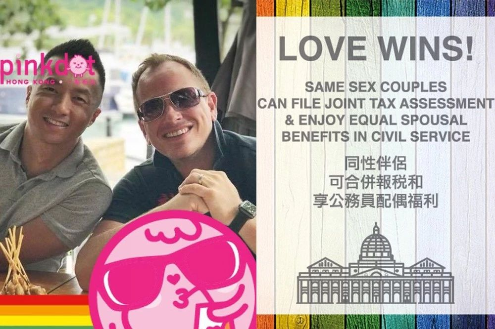
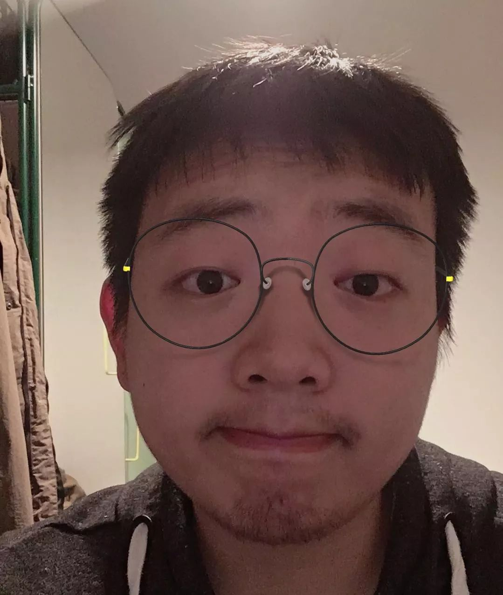

十年终曲： 2019年度同运回首与展望 | 国内篇
以下文章来源于北同文化 ，作者北京同志中心
北同文化
北京同志中心官方微信。北京同志中心成立于2008年2月14日，作为一家民间公益组织，通过在北京地区提供社区服务和开展倡导活动来增强中国同志（LGBT）人群的自我认同；推动同志运动，消除歧视，实现平等；并促进多元文化和公民社会的发展。
随着2020年的临近，21世纪的第二个十年将逐渐拉下帷幕。作为十年的终曲，2019在全球政治与经济的漂泊和动荡中走入尾声。回首2019，我们依旧经历过被失语的无奈，也在年末怀揣着同性婚姻的合法化的期待；我们送别了一个又一个生命，也见证了越来越多同运项目的落地，听到了支持者们愈加响亮的声音。今天请随我们一同盘点2019这一年的全球同志事件，回顾同志群体在这一年的努力与经历的风风雨雨。
大陆：
1月4日，《财新周刊》发文《变色的“淡蓝”》谈论同性社交软件与未成年人保护措施之间的关系。随后人民日报等多家有影响力的媒体纷纷发文谈论同性社交软件与年轻人和艾滋病之间的关系。

1月8日，广州市民政局公布第六批涉嫌非法社会组织名单，其中包括广州高校彩虹小组以及广州性别教育中心。
1月9日，中国网络视听节目服务协会正式发布《网络短视频平台管理规范》和《网络短视频内容审核标准细则》100条。其中规定“非主流婚恋观”不得出现在短视频中。
1月10日，疑因同性恋身份被幼儿园解雇的山东青岛教师明珏（化名）以平等就业权纠纷向青岛市劳动人事争议仲裁委员会申请劳动仲裁，园方被裁决赔偿当事教师六个月工资。

1月14日，武汉市公安局援引《境外非政府组织境内活动管理法》、《出境入境管理法》，将境外非政府组织“彩虹中国”责任人张锦雄处以行政拘留并遣送出境，五年内不准入境。
2月15日，同妻题材的中国电影《再见南屏晚钟》入围第69届柏林国际电影节泰迪熊奖最佳电影提名，并最终获得泰迪熊奖评审团奖。
3月，中国代表团正式对联合国人权理事会LGBT反歧视相关意见与建议（6条）作出答复：接受并已执行。
4月12日，新浪微博#les#超话被封，豆瓣最大的女同性恋小组 LesSky被隐藏。les超话被封的10天过后，微博#我是les#话题达到了77.3万讨论量和4.5亿阅读量。北京同志中心发表相关文章：《女同话题被封，我们该如何发声？》《致豆瓣的一封信》。在社群的发声之后，豆瓣解除了对小组LES SKY的限制。
3月22日，讲述英国知名摇滚乐队皇后乐队及其主唱歌手Freddie Mercury的电影《波西米亚狂想曲》（Bohemian Rhapsody）在国内上映，影片中直接或间接的表现同性恋情节的相关片段（约4分钟）均被删减。
5月15日，青岛市人民政府新闻办公室官方微博“青岛发布”发文《在平等世界里，让所有人不再恐同》回应“留遗书男孩再次出走”。
5月17日，在台湾通过同性婚姻法案后，《人民日报》的官方推特账号在推送中使用了一对女同性情侣、一对异性情侣和一对男同性情侣的动图，以表支持。
7月3日，有网友曝光广西南宁一中学的防艾宣传栏中，出现“同性恋寿命比正常人短八到十年”等严重歧视性的和严重不科学的内容，宣传栏现已被撤下。
7月12日，联合国人权理事会的大会投票以27票赞成、12票反对、7票弃权的投票结果通过了继续设立保障LGBT不遭受歧视和暴力的联合国独立专家职位的决定。中国等国投了反对票。
8月14日，成都公益组织米尔克发文《关于成都市武侯区社区发展基金会彩虹同行公益基金的严正声明》，表示此基金不存在任何涉及境外势力、接受境外资金的情况。10月9日，米尔克发布《终止运营公告》。
8月21日，中国全国人大常委会法制工作委员会举行第一次记者会，法工委发言人臧铁伟就“同性恋婚姻”的问题回答记者提问，明确表示一夫一妻制符合我国的国情和历史文化传统。 衍生阅读：《关于“法工委回应同性婚姻合法化”的一封公开信》。
10月18日全国人大常委会法工委发言人第二次记者会召开，发言人提到针对相关婚姻家庭编相关意见，其中同语二审稿部分意见得到回应和体现。同时，在中国妇女报记者提问有关非婚同居问题时，强调“对于其他形式的同居”，民法典婚姻家庭编暂不作出明确的规定。
10月24日，中国代表在针对性倾向反歧视独立专家向联大提交报告的会议中发言中表示，中国反对所有的歧视和暴力，包括基于性倾向的歧视和暴力。
10月29日，同性恋组织彩溪社的志愿者反映山东省泰山学院自编教材《大学生心理素质教育教程》中出现“污名化”同性恋的言论，教材编写人员把同性恋、异装癖归为性变态，并声称“同性恋的预防应自童年开始”、“使用心理治疗技术帮助其找出原因”、“并尽可能鼓励同性恋与异性结婚”。同性恋组织认为，泰山学院自编教材出现明显错误的、歧视性的言论，涉及对性少数群体平等权、人格尊严权和健康权的侵犯。经同性恋组织联系和反映，泰山学院已经将该教材悉数收回。
12月20日，全国人大常委会法工委举行第三次记者会，发言人岳仲明在提及婚姻家庭编时指出“民法典婚姻家庭编草案三次审议稿意见主要集中在完善近亲属的范围、修改可撤销婚姻的撤销机关、进一步完善夫妻共同债务、同性婚姻合法化等方面。”同时，还提到反家庭暴力法和相关法律的完善，以及实践当中加强有效实施。 衍生阅读：《致全国人大法工委的公开信（二）》
12月28日，据中国人大网和全国人大app综合消息，第十三届全国人大常委会第十五次会议对《中华人民共和国民法典（草案）》进行了审议。现将《中华人民共和国民法典（草案）》在中国人大网公布，向社会公众征集意见。次日，“爱成家”发起了第二次民法典同性婚姻拼量动员，号召公众给民法典草案提意见，建议同性婚姻法典化。 衍生阅读：《民法典同性婚姻拼量动员（二）》
5月17日，台湾的“行政院”版本的同性婚姻专法法案在“立法院”获二读、三读投票通过，法案将于5月24日生效，同性情侣可从5月24日起登记结婚。依照这一专法登记结婚的同性伴侣将可享有《民法》婚姻的大部分权利。

10月26日下午，第17届台湾同志游行在台北市开始，参加人数超过17万，包括200多个各界团队，路线长达5.5公里。
11月23日，第56届金马奖于晚在台北揭晓颁奖。在同性恋题材电影《我的灵魂是爱做的》中饰演同妻的张诗盈获得最佳女配角。香港同性恋题材电影的《叔·叔》获得包括最佳剧情长片、最佳男主角以及最佳原著剧本和最佳女配角在内的五项提名。
5月30日，高等法院裁决废除了4条仅仅针对男性同性性行为的刑事犯罪条文，对另外3个条文则裁决作出补救解释。
6月6日，在公务员要求获得同性配偶福利案中，高等法院判决同性配偶一方胜诉，在国外同性结婚的公务员的同性配偶将享有医疗等配偶福利、以及配偶合并报税享受免税额的权利。在9月6日的判决中，法院认定《税务条例》中“婚姻”一词包括同性婚姻。
10月18日，在女同性恋者争取同性结婚和民事结合权案中，高等法院基于香港不承认同性婚姻以及没有制定让同性伴侣缔结民事结合关系的法律机制判决同性恋者方败诉。

终曲即逝，新曲将启，逝者如斯，不舍昼夜。年年岁岁花相似，岁岁年年人不同，但是一代又一代新的平权者们将会继续走在这条艰难险阻的道路上，为后人踏平万丈。新十年的序曲即将开始演奏，让我们一起奋斗着，期待着！
作者：yarvey

TA的文章：